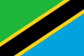
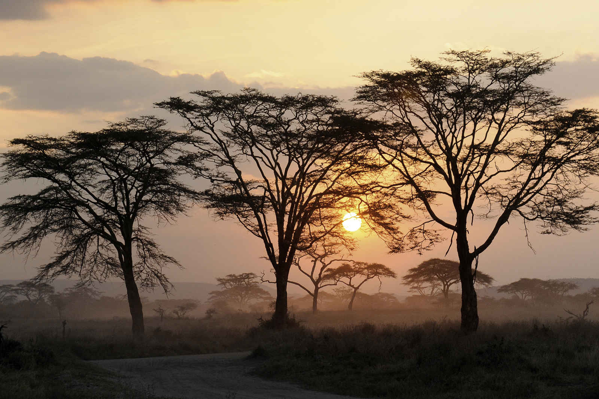

Tanzania

To know:
Form of State: Unitary presidential, republic
President: Samia Suluhu.
Vice President: Philip Mpango
Parliament: Congress
Official languages: Swahili, English
Capital: Dodoma
Total population (2023): 62 092 761 hab.
Tanzania, is an East African country located on the edge of the Indian Ocean, in the tropical part of the southern hemisphere.
It is bordered to the north by Kenya and Ugandav, to the west by Rwanda, Burundi and the Democratic Republic of the Congo, to the southwest by Zambia and Malawi and to the south by Mozambique.
Present-day Tanzania was born from the union of Tanganyika and Zanzibar on April 26, 1964, shortly after their respective independence from the United Kingdom. It has been a member of the Commonwealth since the end of 1961 and of the United Nations since 14 December 1961. In 1977, the Chama cha Mapinduzi was founded as a single party. Although a multiparty system was introduced in 1992, the CCM remains the dominant party.
Religion
The most represented religions are Islam (33%) and Christianity (66%). However, religious statistics have not existed in Tanzania since 1963 and very different figures sometimes emergy. 99% of the population of Zanzibar is Muslim. The strong development of Pentecostal churches is a recent development. The large presence of Lutherans in the Protestant community is a legacy of German colonization. Catholics in Zanzibar are reportedly being persecuted by a group of Muslims, the majority on the island, against a backdrop of independence policies
